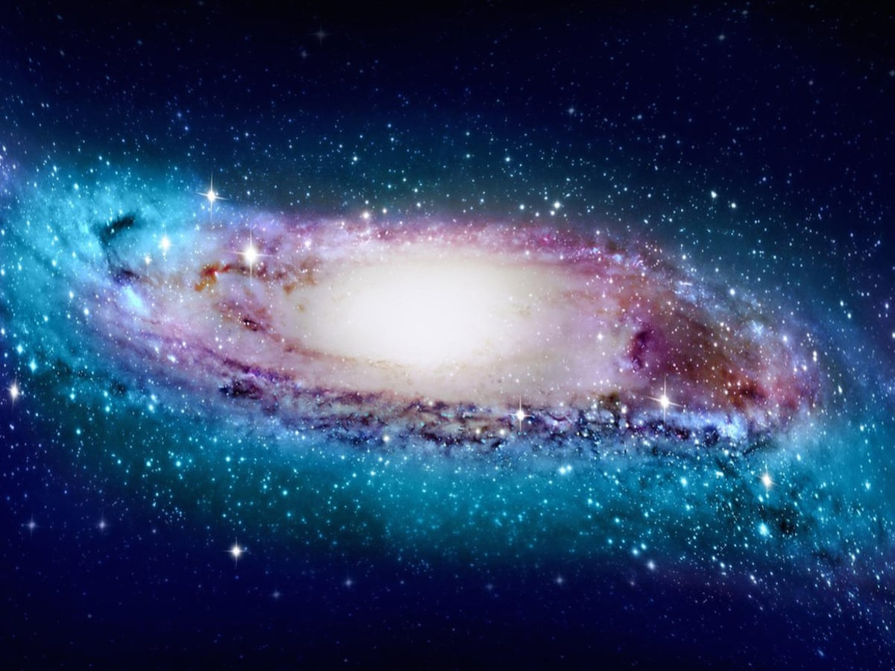
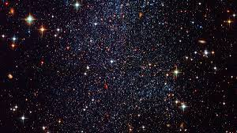
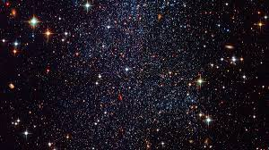

GALAXY
A galaxy is a gravitationally bound system of stars, stellar remnants, interstellar gas, dust, and dark matter. The word is derived from the Greek galaxias , literally "milky", a reference to the Milky Way. Galaxies range in size from dwarfs with just a few hundred million (108) stars to giants with one hundred trillion (1014) stars,each orbiting its galaxy's center of mass.
Galaxies are categorized according to their visual morphology as elliptical,spiral, or irregular. Many are thought to have supermassive black holes at their centers. The Milky Way's central black hole, known as Sagittarius A*, has a mass four million times greater than the Sun.As of March 2016, GN-z11 is the oldest and most distant galaxy observed. It has a comoving distance of 32 billion light-years from Earth, and is seen as it existed just 400 million years after the Big Bang.
  In 2021, data from NASA's New Horizons space probe was used to revise the previous estimate to roughly 200 billion galaxies (2×1011), which followed a 2016 estimate that there were two trillion (2×1012) or more galaxies in the observable universe, overall, and as many as an estimated 1×1024 stars (more stars than all the grains of sand on all beaches of the planet Earth).Most of the galaxies are 1,000 to 100,000 parsecs in diameter (approximately 3,000 to 300,000 light years) and are separated by distances on the order of millions of parsecs (or megaparsecs). For comparison, the Milky Way has a diameter of at least 30,000 parsecs 00,000 ly) and is separated from the Andromeda Galaxy, its nearest large neighbor, by 780,000 parsecs (2.5 million ly.)
The space between galaxies is filled with a tenuous gas (the intergalactic medium) with an average density of less than one atom per cubic meter. Most galaxies are gravitationally organized into groups, clusters and superclusters. The Milky Way is part of the Local Group, which it dominates along with Andromeda Galaxy. The group is part of the Virgo Supercluster. At the largest scale, these associations are generally arranged into sheets and filaments surrounded by immense voids. Both the Local Group and the Virgo Supercluster are contained in a much larger cosmic structure namedhe word galaxy was borrowed via French and Medieval Latin from the Greek term for the Milky Way, galaxías (kúklos) 'milky (circle)', named after its appearance as a milky band of light in the sky. In Greek mythology, Zeus places his son born by a mortal woman, the infant Heracles, on Hera's breast while she is asleep so the baby will drink her divine milk and thus become immortal. Hera wakes up while breastfeeding and then realizes she is nursing an unknown baby: she pushes the baby away, some of her milk spills, and it produces the band of light known as the Milky Way
In the astronomical literature, the capitalized word "Galaxy" is often used to refer to our galaxy, the Milky Way, to distinguish it from the other galaxies in our universe.
 In 2021, data from NASA's New Horizons space probe was used to revise the previous estimate to roughly 200 billion galaxies (2×1011), which followed a 2016 estimate that there were two trillion (2×1012) or more galaxies in the observable universe, overall, and as many as an estimated 1×1024 stars (more stars than all the grains of sand on all beaches of the planet Earth).Most of the galaxies are 1,000 to 100,000 parsecs in diameter (approximately 3,000 to 300,000 light years) and are separated by distances on the order of millions of parsecs (or megaparsecs). For comparison, the Milky Way has a diameter of at least 30,000 parsecs 00,000 ly) and is separated from the Andromeda Galaxy, its nearest large neighbor, by 780,000 parsecs (2.5 million ly.)
The space between galaxies is filled with a tenuous gas (the intergalactic medium) with an average density of less than one atom per cubic meter. Most galaxies are gravitationally organized into groups, clusters and superclusters. The Milky Way is part of the Local Group, which it dominates along with Andromeda Galaxy. The group is part of the Virgo Supercluster. At the largest scale, these associations are generally arranged into sheets and filaments surrounded by immense voids. Both the Local Group and the Virgo Supercluster are contained in a much larger cosmic structure namedhe word galaxy was borrowed via French and Medieval Latin from the Greek term for the Milky Way, galaxías (kúklos) 'milky (circle)', named after its appearance as a milky band of light in the sky. In Greek mythology, Zeus places his son born by a mortal woman, the infant Heracles, on Hera's breast while she is asleep so the baby will drink her divine milk and thus become immortal. Hera wakes up while breastfeeding and then realizes she is nursing an unknown baby: she pushes the baby away, some of her milk spills, and it produces the band of light known as the Milky Way
In the astronomical literature, the capitalized word "Galaxy" is often used to refer to our galaxy, the Milky Way, to distinguish it from the other galaxies in our universe.